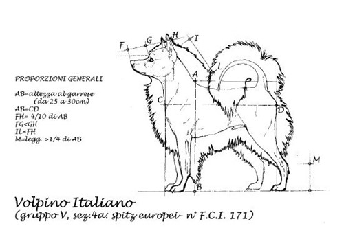
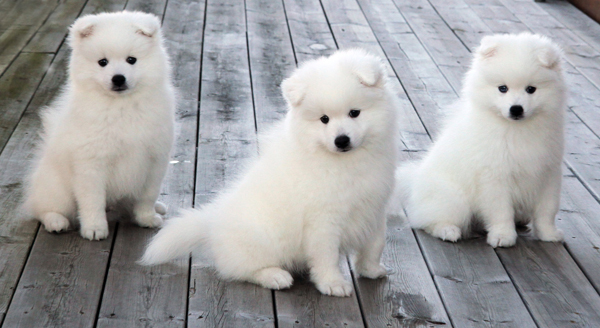

Appearance and Health
Volpino Italiano is one of the smallest spitz type dogs and its height at the wither should be around 25-30cm and weight around 5kg. Color of this dog should always be monochromatic and it should be white or reddish. The fur of Volpino Italiano is really easy to keep clean despite the color and length of the fur. The fur don't have to be washed more than once or twice a year.
The basic well being and health of the Volpino Italiano breed are far better than most dogs due to the breeds primitive background. However there are some genetic diseases among the breed. Also this breed is really long-living and can live up to 16 years. The average is between 14-15 years.
